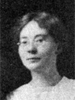

The Family of Anders Peter and Annie Lyman Anderson
Home
Histories
Charts
Photos
Maps
Restricted
News
Info
Contact
| <--(return)-- |    | Jens Andersen and Ane Pedersen Anderson |
----> | Anders Peter Anderson and Annie Lyman Dutson Married 9 Oct 1882 (She was previously married to William Dutson.) |
| * | Fredrick Clisbee Anderson - 1st child, 23 Nov. 1883 - 27 Nov. 1883 |
 |
Caroline Ely Anderson 4 Apr. 1885 - 30 Nov. 1960 Married Peter "N" Nielson 21 Apr. 1909 The 2nd child of Anders Peter and Annie Lyman Anderson |
|
Lucy Anderson 30 Mar. 1887 - 6 Apr. 1958 Married Leroy Walker 10 July 1914 The 3rd child of Anders Peter and Annie Lyman Anderson |
|
Mason Eldon Anderson 10 Aug. 1889 - 19 Feb 1976 Married Alice Brown Dean 27 June 1917 The 4th child of Anders Peter and Annie Lyman Anderson |
| Lois Anderson 12 July 1892 - 16 Jan. 1930 The 5th child of Anders Peter and Annie Lyman Anderson | |
|
Don Lyman Anderson 7 Apr 1895 - 8 Jan 1982 Married Thelma Levern Lovell 7 Apr. 1925 Married Ruth Walker Lovell 24 May 1951 The 6th child of Anders Peter and Annie Lyman Anderson |
|
Francis Ellis Anderson 20 Dec. 1897 - 1 Feb. 1967 Married Macel Jane Morrey 1 Jul 1927 The 7th child of Anders Peter and Annie Lyman Anderson |
|
Ethelyn Anderson 1 July 1901 - 1 Dec 1975 Married Mark Llewellyn Bennett 13 May 1925 The 8th child of Anders Peter and Annie Lyman Anderson |